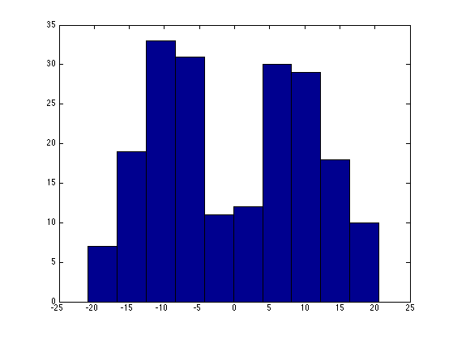
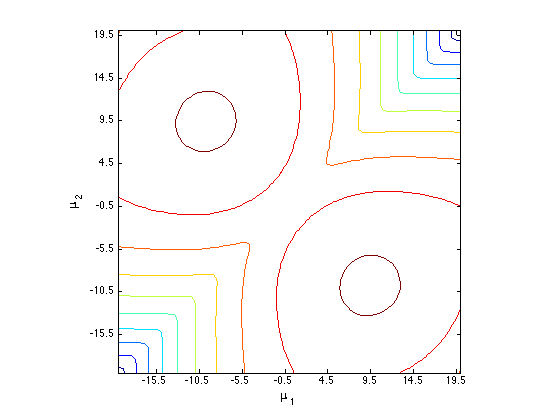

Likelihood surface of mixture of 2 Gaussians in 1d
Based on code by Mike Li
Generate data
% This file is from pmtk3.googlecode.com fs = 12; setSeed(0); true_mu1 = -10; true_mu2 = 10; true_pi = 0.5; sigmas = [5]; for sigmai=1:length(sigmas) true_sigma = sigmas(sigmai); n_obs = 100; obs = [true_mu1 + true_sigma*randn(1, n_obs) true_mu2 + true_sigma*randn(1, n_obs)]'; figure; hist(obs); printPmtkFigure(sprintf('gmmLikSurfaceHistSigma%d', true_sigma)) % Evaluate likelihood surface dmu = .5; mu1_bins = -20:dmu:20; mu2_bins = -20:dmu:20; n_mu1_bins = length(mu1_bins); n_mu2_bins = length(mu2_bins); lik_bins = zeros(n_mu1_bins, n_mu2_bins); for b1 = 1:n_mu1_bins for b2 = 1:n_mu2_bins p1 = true_pi * gaussProb(obs, mu1_bins(b1), true_sigma); p2 = (1-true_pi) * gaussProb(obs, mu2_bins(b2), true_sigma); lik_bins(b1, b2) = sum(log(p1 + p2)); end end figure; contour(lik_bins); set(gca, 'XTickLabel', mu1_bins(get(gca, 'XTick'))) set(gca, 'YTickLabel', mu2_bins(get(gca, 'YTick'))) xlabel('\mu_1', 'fontsize', fs) ylabel('\mu_2', 'fontsize', fs) axis square printPmtkFigure(sprintf('gmmLikSurfaceSurSigma%d', true_sigma)) end 